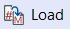
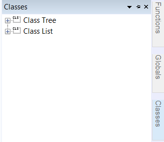

Lesson 2: Defining Segments and Displaying Objects#
Note
Here’s an AnyScript file to start on if you have not completed the previous lesson:
demo.lesson2.any
The basic building blocks of a mechanical system are the “segments” 1. In AnyBody, the segments are treated as rigid elements which represent human bones as well as non-human components such as exoskeleton/machine parts etc.
A segment is just a coordinate system with mass and inertial properties, which can move around freely in 3D space.
Creating a segment (using the Class Inserter)#
We shall start by defining a folder for the segments. Please add the following text to your model (new text marked in red):
// The actual body model goes in this folder
AnyFolder ArmModel = {
// Global Reference Frame
AnyFixedRefFrame GlobalRef = {
// Todo: Add points for grounding
// of the model here
}; // Global reference frame
// Segments
AnyFolder Segs = {
}; // Segs folder
}; // ArmModel
Load the model by clicking the  icon or the F7 key. If you expand the “ArmModel” folder in the tree view, you should see a new, empty folder named “Segs”.
We are now ready to add a segment to the model, and this would probably be a good time to introduce you to the Class Inserter.
The Classes tab on the right edge of your AnyBody interface opens a Class List containing all the predefined classes in AnyScript.
To insert a segment, start by placing your text cursor within the braces of the newly
defined “AnyFolder Segs”. Then find the class AnySeg in the Class List and
double-click it to insert its template into your text editor.
You should get this:
// Segments
AnyFolder Segs = {
AnySeg <ObjectName> =
{
//r0 = {0, 0, 0};
//rDot0 = {0, 0, 0};
//Axes0 = {{1, 0, 0}, {0, 1, 0}, {0, 0, 1}};
//omega0 = {0, 0, 0};
Mass = 0;
Jii = {0, 0, 0};
//Jij = {0, 0, 0};
//sCoM = {0, 0, 0};
};
}; // Segs folder
Every object in AnyBody defined by some properties that are both mandatory (the template contains some default values) or optional (these properties are commented out). You can delete all optional properties except for r0 and Axes0.
For an AnySeg object Mass (segment mass) and Jii (diagonal elements of the inertia tensor) are the mandatory properties. Note that by default,
the segment’s coordinate system is located at the center of mass, with its local coordinate system being the principal axes of inertia.
You can however change this by editing the properties sCoM and Jij. Go to “Help->Anyscript Reference” for more information on the AnySeg class’s properties.
Let us rename the segment as “UpperArm” and set its Mass = 2 and Jii = {0.001, 0.01, 0.01}:
AnySeg UpperArm = {
//r0 = {0, 0, 0};
//Axes0 = {{1, 0, 0}, {0, 1, 0}, {0, 0, 1}};
Mass = 2;
Jii = {0.001, 0.01, 0.01};
}; //UpperArm
Load the model again and notice the warnings you get. Amongst other messages:
Model Warning: Study ‘Main.ArmStudy’ contains too few kinematic constraints to be kinematically determinate.
This means that your model has some degrees of freedom, for which AnyBody does not have any motion or constraint information. It therefore cannot evaluate the model’s kinematics. We will take care of this in the next lesson
Displaying a segment#
To make something visible in AnyBody, you have to add a drawing object which defines visibility:
AnySeg UpperArm = {
//r0 = {0, 0, 0};
//Axes0 = {{1, 0, 0}, {0, 1, 0}, {0, 0, 1}};
Mass = 2;
Jii = {0.001, 0.01, 0.01};
AnyDrawSeg drw = {};
}; // UpperArm
Reload the model, and look at the Model View (you might have to press the button to locate your segment) . The segment is displayed as an ellipsoid whose dimensions capture the mass distribution represented by Jii. Changing any one component of Jii will alter the shape of the ellipse.
Adding point nodes to a segment#
We define some nodes in the local coordinate system of the segment, for eventually attaching muscles, joints, forces etc. to the segment.
Figuring out these node locations for the actual human models can be a laborious task, but you can often use ready-made anatomical nodes defined in most AMMR models.
For this model, copy and paste the following lines into your file:
AnySeg UpperArm = {
//r0 = {0, 0, 0};
//Axes0 = {{1, 0, 0}, {0, 1, 0}, {0, 0, 1}};
Mass = 2;
Jii = {0.001, 0.01, 0.01};
AnyDrawSeg drw = {};
AnyRefNode ShoulderNode = {
sRel = {-0.2,0,0};
};
AnyRefNode ElbowNode = {
sRel = {0.2,0,0};
};
AnyRefNode DeltodeusA = {
sRel = {-0.1,0,0.02};
};
AnyRefNode DeltodeusB = {
sRel = {-0.1,0,-0.02};
};
AnyRefNode Brachialis = {
sRel = {0.1,0,0.01};
};
AnyRefNode BicepsShort = {
sRel = {-0.1,0,0.03};
};
AnyRefNode Brachioradialis = {
sRel = {0.05,0,0.02};
};
AnyRefNode TricepsShort = {
sRel = {-0.1,0,-0.01};
};
}; // UpperArm
If you reload the model, you should see the newly added nodes connected to the center of gravity by yellow pins.
Creating a second segment#
You will now add a forearm segment to the mechanism by copy-pasting these lines into the “Segs” folder:
AnySeg ForeArm = {
Mass = 2.0;
Jii = {0.001,0.01,0.01};
AnyRefNode ElbowNode = {
sRel = {-0.2,0,0};
};
AnyRefNode HandNode = {
sRel = {0.2,0,0};
};
AnyRefNode Brachialis = {
sRel = {-0.1,0,0.02};
};
AnyRefNode Brachioradialis = {
sRel = {0.0,0,0.02};
};
AnyRefNode Biceps = {
sRel = {-0.15,0,0.01};
};
AnyRefNode Triceps = {
sRel = {-0.25,0,-0.05};
};
AnyDrawSeg DrwSeg = {};
}; // ForeArm
}; // Segs folder
When you reload the model, you may not see the forearm immediately because it’s defined to look exactly the same and is loaded exactly on top of the upper arm.
To solve this problem, you can change the initial/load time position of the two segments by adjusting r0 (translation w.r.t global frame at load-time) and Axes0 (rotation matrix w.r.t global frame at load-time).
Remember that your simulation, will only use these load-time positions as an initial guess, on the way to enforcing specified motions and constraints (such as joints between segments). More on this in the next lesson.
For now, let us first change r0 - the global position of the segment at load-time.
AnySeg UpperArm = {
r0 = {0, 0.3, 0};
//Axes0 = {{1, 0, 0}, {0, 1, 0}, {0, 0, 1}};
Mass = 2;
Jii = {0.001, 0.01, 0.01};
AnyDrawSeg drw = {};
and
AnySeg ForeArm = {
r0 = {0.3, 0, 0};
Mass = 2.0;
Jii = {0.001,0.01,0.01};
This will clearly separate the segments in your Model View:

Rotation matrices in AnyBody#
To improve the visual impression of the arm segments at load time, we will set the Axes0 property, which is really a rotation matrix.
You UpperArm segment currently looks like this:
AnySeg UpperArm = {
r0 = {0, 0.3, 0};
Axes0 = {{1, 0, 0}, {0, 1, 0}, {0, 0, 1}};
Note
Note that matrices in AnyBody are arranged row-wise, so {1, 0, 0} in Axes0 is the first row of a 3x3 matrix.
Rotation matrices are a bit difficult to cook up on the fly. If your spatial thinking is good, you could maybe figure out the exact expressions for all 9 components of the 3x3 Axes0 matrix.
An easier solution is to use a standard function named “RotMat”, which returns a rotation matrix corresponding to a given axis and rotation angle. Therefore, we can specify:
AnySeg UpperArm = {
r0 = {0, 0.3, 0};
Axes0 = RotMat(-90*pi/180, z);
When you reload again, you will see that the UpperArm rotated -90 degrees about the global z axis, as the function arguments indicate. The “RotMat” functions needs rotations as radians, hence the multiplication of the 90 degree angle by pi/180. AnyBody identifies the word “pi” as 3.14159.
Note
Angles in AnyBody are always in radians.
In the next lesson, we will look at how joints can be used to constrain the movement of segments and allow them to articulate the way we desire.
Footnotes
- 1
In rigid body dynamics terminology, a “segment” would be called a “rigid body”, but to avoid unnecessary confusion between the rigid bodies and the total body model, we have chosen to use “segments” for the rigid parts of the model.